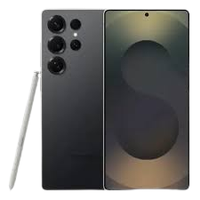

Online Shop for Electronics
contact ussamsung galaxy s25 ultra
The Samsung Galaxy S25 Ultra arrives with only modest hardware improvements but a new universe of possibilities within. Its display is bigger and more immersive than ever, and we like its rounded corners and narrower body, which make it easier to handle than previous generations. Powered by Qualcomm's Snapdragon 8 Elite for Galaxy processor, the S25 Ultra delivers ultra-smooth performance and the most impressive AI features we've seen in a phone yet, many of which run locally. At its sky-high starting price of $1,299.99, the S25 Ultra isn’t for everyone, but its blend of top-notch hardware, advanced AI software, and a built-in stylus give it an edge over the $799.99 Galaxy S25 and the $999.99 S25+ to represent the absolute pinnacle of Android phones in early 2025 and earn our Editors' Choice award.
Operating System: Android 15
CPU: Qualcomm Snapdragon 8 Elite for Galaxy
Dimensions: 6.41 by 3.02 by 0.33 inches
Screen Size: 6.9 inches
Screen Resolution: 3,120 by 1,440 pixels
Camera Resolution (Rear; Front-Facing): 200MP, 50MP, 50MP, 10MP; 12MP
Battery Life (As Tested): 14 hours, 15 minutes
HP Omen 35L

The best gaming PC should be a balance of many things—a plethora of excellent
component choices, constructed well,
at a good price. The HP Omen 35L ticks all those boxes, making for a tidily built
machine with an excellent choice
of powerful components for reasonable amounts of cash.
Desktop Class: Gaming
Processor: AMD Ryzen 7 8700G
RAM (as Tested): 64 GB
Boot Drive Type: SSD
Boot Drive Capacity (as Tested): 2 TB
Secondary Drive Type: Hard Drive
Secondary Drive Capacity (as Tested): 2 TB
Graphics Card: Nvidia GeForce RTX 4080 Super
Operating System: Windows 11 Pro
MSI MPG 321URX QD-OLED

The MSI MPG 321URX is a flat 32-inch, 4k gaming monitor with a 240Hz refresh rate. As a part of MSI's Performance Gaming (MPG) lineup, it sits alongside other QD-OLED monitors, like the 27-inch 1440p MSI MPG 271QRX QD-OLED. MSI also has a very similar monitor, the MAG 321UPX QD-OLED, which lacks some of the extra features of the 321URX, such as 90W of power delivery over USB-C. It competes with several other 32-inch OLED monitors, like the ASUS ROG Swift OLED PG32UCDM and the Samsung Odyssey OLED G8/G80SD S32DG80. Unlike some monitors, it uses a heatsink instead of a fan to dissipate heat. It also has several non-gaming features, such as a KVM switch, making it easy to multitask with different computers. MSI also offers a three-year warranty on the monitor, which includes burn-in coverage.
Display size: 31.5-inch 16:9 widescreen
Native resolution: 3840×2160
Panel type: QD-OLED
Refresh rate: 240Hz
Adaptive sync: Yes, Nvidia G-Sync Compatible
HDR: Yes, VESA DisplayHDR True Black 400 Certified
Ports: 2x HDMI 2.1, 1x DisplayPort 1.4, 1x USB-C with DisplayPort and 90 watts of Power Delivery, 1x USB-B 2.0 upstream, 2x USB-A 2.0 downstream, 1x 3.5mm headphone jack
VESA mount: 100x100mm
Audio: None
OLED Panel warranty: 3-year warranty including panel burn-in